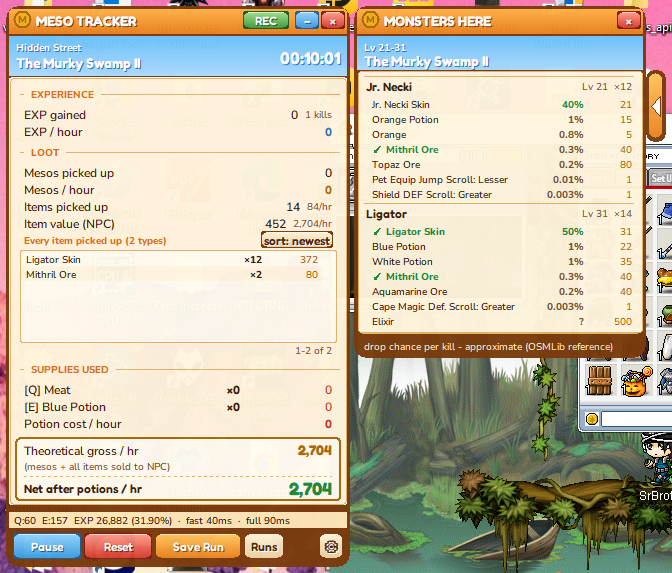

A small overlay that sits next to MapleStory Classic and reads your EXP, mesos, items and the monsters on your map - so you always know whether a spot is actually worth farming.

Session and rolling rates, auto-paused when you're idle or in town, so the number is never diluted by AFK time.
A closed-vocabulary matcher resolves damaged in-game text against the real item list instead of guessing - garbage names never show up, and it tells you honestly when it isn't sure.
See every monster on your current map, its level, and its drops with an approximate drop chance - know what a map is good for before you commit to farming it.
Tracks what your Q/E potions actually cost and subtracts it, so "net per hour" is the number that matters.
Every map you farm gets logged with its own EXP/hr and mesos/hr, so you can compare spots later.
It only looks at your screen. It never touches game files or memory, and never sends a single keystroke or click.
You'll get your download link and licence key by email right after payment, handled securely by Stripe - this site never sees your card details.
It only reads pixels from your own screen, the same as a screen recorder - it never reads or writes game memory or files, and never sends input. We can't make promises about any game's rules, but there is nothing here that acts on the game, only something that watches your screen.
One licence runs on one PC at a time. The app fingerprints your PC on first launch; moving to a new PC is a click in Settings ("Deactivate this device"), no email needed.
Use "Manage billing" with the email you purchased with - it also resends your key.
Cancel any time and you won't be charged again; email us for anything else.